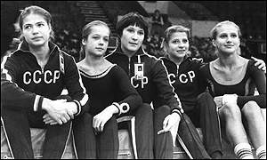

Olga Koval (USSR)
1975 World Cup V Silver Medalist

Koval (2nd from left) and her
teammates at the
1975 World Cup.
Medal Total
World Cup: 1 Silver
Koval trained at Zenit Leningrad with coach Vladimir Reison. A tall and classical gymnast, she was unable to perform the daredevil skills that her smaller teammates could and so she was relegated to the Soviet "B" team. Koval graced the cover of "The Complete Book of Gymnastics," published in 1977. She and her family live in Minnesota, where Olga has her own gym, Dynamics Gymnastics.
Competition Results
1975
All-Union Sports Schools Competition: 2nd AA
GDR-USSR: 1st Team, 2nd AA, 2nd B, 2nd FX, 3rd V
JPN-USSR: 1st Team, 5th AA
Jr. ROM-USSR: 1st Team, 1st AA
Jr. USSR Championships: 1st AA
Moscow News: 3rd AA, 1st V, 3rd FX
Pre-Olympics: 4th AA, 2nd V, 5th B, 6th FX
ROM-USSR: 1st Team, 1st AA
World Cup: 7th AA, 2nd V, 4th FX, 5th B
1976
All-Union Schools Spartakiade: 2nd AA, 3rd V
USSR-CSSR Dual Meet: 1st Team, 4th AA, 3rd UB, 6th B
USSR Championships: 6th Team, 5th AA, 3rd V, 5th UB, 5th B, 5th FX
USSR Cup: 16th AA, 4th V, 4th B
1977
British Invitational: 5th AA
USSR Championships: 8th AA, 5th FX
USSR Cup: 11th AA, 5th FX
1978 1979 This page was created on September
28, 2002 and was last updated on July 25, 2022.
FRA-USSR-BUL: 1st Team, 2nd AA
USSR Championships: 15th AA, 7th B
USSR Spartakiade: 8th AA
© Gymn Forum